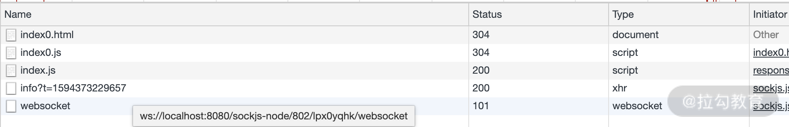
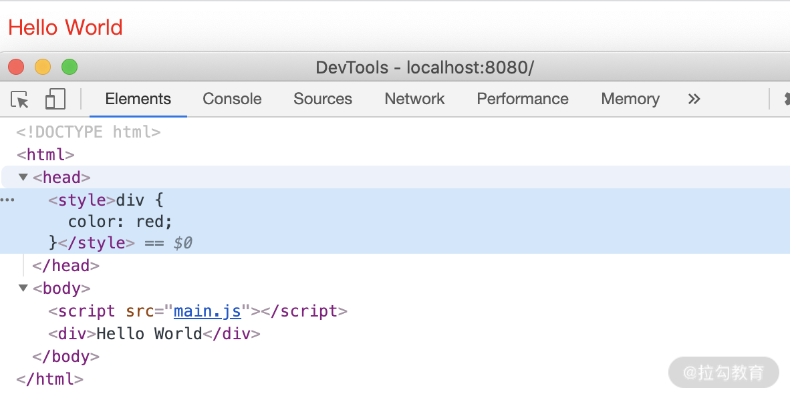
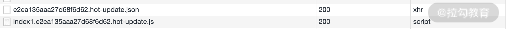
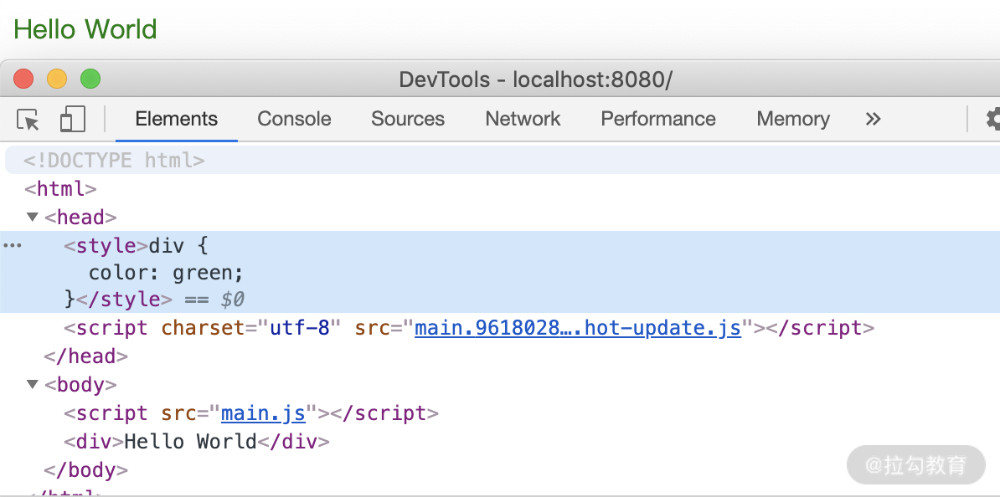
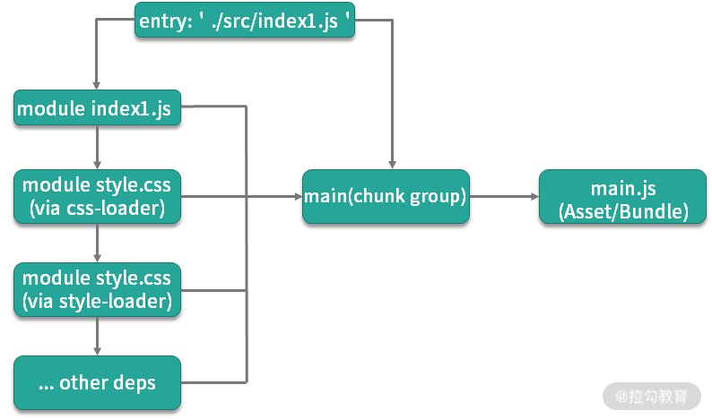
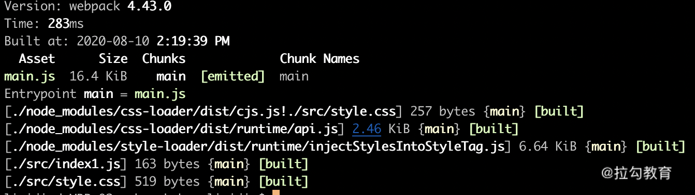
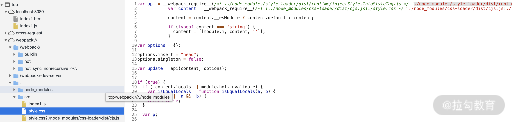

- 00 开篇词 建立上帝视角，全面系统掌握前端效率工程化.md.html
- 01 项目基石：前端脚手架工具探秘.md.html
- 02 界面调试：热更新技术如何开着飞机修引擎？.md.html
- 03 构建提速：如何正确使用 SourceMap？.md.html
- 04 接口调试：Mock 工具如何快速进行接口调试？.md.html
- 05 编码效率：如何提高编写代码的效率？.md.html
- 06 团队工具：如何利用云开发提升团队开发效率？.md.html
- 07 低代码工具：如何用更少的代码实现更灵活的需求.md.html
- 08 无代码工具：如何做到不写代码就能高效交付？.md.html
- 09 构建总览：前端构建工具的演进.md.html
- 10 流程分解：Webpack 的完整构建流程.md.html
- 11 编译提效：如何为 Webpack 编译阶段提速？.md.html
- 12 打包提效：如何为 Webpack 打包阶段提速？.md.html
- 13 缓存优化：那些基于缓存的优化方案.md.html
- 14 增量构建：Webpack 中的增量构建.md.html
- 15 版本特性：Webpack 5 中的优化细节.md.html
- 16 无包构建：盘点那些 No-bundle 的构建方案.md.html
- 17 部署初探：为什么一般不在开发环境下部署代码？.md.html
- 18 工具盘点：掌握那些流行的代码部署工具.md.html
- 19 安装提效：部署流程中的依赖安装效率优化.md.html
- 20 流程优化：部署流程中的构建流程策略优化.md.html
- 21 容器方案：从构建到部署，容器化方案的优势有哪些？.md.html
- 22 案例分析：搭建基本的前端高效部署系统.md.html
- 23 结束语 前端效率工程化的未来展望.md.html
- 捐赠
02 界面调试：热更新技术如何开着飞机修引擎？
你好，我是李思嘉，上一课时我们聊了几个典型脚手架的特点和使用，课后给大家留的思考题是在实际项目里使用的是哪一类脚手架工具以及使用的理由，希望你能通过这个题目来思考工具之间的差异性。这个思考的过程有助于加深我们对工具本身的细节认知，也能够锻炼技术选型的思维。
这一课时，我们再来聊聊前端开发过程中一个经典的提高开发效率的技术：浏览器的热更新。
什么是浏览器的热更新
看见浏览器热更新，相信你很容易想到 webpack 和 webpack-dev-server 。确实，现在各类型的脚手架工具在创建项目时通常已配置好了开启各种优化选项的 webpack ，其中自然也包含了开发服务器。大家在上手开发时，可以简单地执行 npm start (cra) 或 npm run serve (vue cli)，就能体验到热更新的效果。
但是在我过去担任中高级前端岗位的面试官时，经常发现很多来面试的同学对于到底什么是热更新都很难讲清楚，热更新是保存后自动编译（Auto Compile）吗？还是自动刷新浏览器（Live Reload）？还是指 HMR（Hot Module Replacement，模块热替换）？这些不同的效果背后的技术原理是什么呢？今天我们就来回答下这些问题。
先来看下，究竟什么是浏览器的热更新。浏览器的热更新，指的是我们在本地开发的同时打开浏览器进行预览，当代码文件发生变化时，浏览器自动更新页面内容的技术。这里的自动更新，表现上又分为自动刷新整个页面，以及页面整体无刷新而只更新页面的部分内容。
与之相对的是在早期开发流程中，每次代码变更后需要手动刷新浏览器才能看到变更效果的情况。甚至于，代码变更后还需要手动执行打包脚本，完成编译打包后再刷新浏览器。而使用浏览器的热更新，可以大大减少这些麻烦。
webpack 中的热更新配置
下面我们就以 webpack 工具为例，来看下四种不同配置对结果的影响（完整示例代码 https://github.com/fe-efficiency/lessons_fe_efficiency/02_webpack_hmr）。
一切依赖手动
首先来看第一个最简单的配置，在入口 js 中我们简单地打印一个文本，然后在构建配置里只有最简单的 entry 和 mode 配置。
src/index0.js
function render() {
div = document.createElement('div')
div.innerHTML = 'Hello World0';
document.body.appendChild(div)
}
render()
webpack.config.basic.js
module.exports = {
entry: './src/index0.js',
mode: 'development',
}
package.json
"scripts": {
"build:basic": "webpack --config webpack.config.basic.js"
}
当我们执行 npm run build:basic 时，webpack 将 entry 中的源文件 index0.js 打包为 dist/main.js，并退出进程。流程很简单，但是如果我们接下来改动了源文件的输出文本，会发现由于构建配置中没有任何对应处理，所以在保存后，打包后的文件内容并没有更新。为了同步改动效果，我们需要再次手动执行该命令。
Watch 模式
第二种配置是 watch 模式。为了摆脱每次修改文件后都需要手动执行脚本才能进行编译的问题，webpack 中增加了 watch 模式，通过监控源码文件的变化来解决上面不能自动编译问题。我们可以在配置脚本中增加 watch:true，如下：
webpack.config.watch.js
{...
watch: true
...}
package.json
"scripts": {
"build:watch": "webpack --config webpack.config.watch.js"
}
当我们执行 npm run build:watch，webpack 同样执行一次打包过程，但在打包结束后并未退出当前进程，而是继续监控源文件内容是否发生变化，当源文件发生变更后将再次执行该流程，直到用户主动退出（除了在配置文件中加入参数外，也可以在 webpack 命令中增加 –watch 来实现）。
有了 watch 模式之后，我们在开发时就不用每次手动执行打包脚本了。但问题并未解决，为了看到执行效果，我们需要在浏览器中进行预览，但在预览时我们会发现，即使产物文件发生了变化，在浏览器里依然需要手动点击刷新才能看到变更后的效果。那么这个问题又该如何解决呢？
Live Reload
第三种配置是 Live Reload。为了使每次代码变更后浏览器中的预览页面能自动显示最新效果而无须手动点击刷新，我们需要一种通信机制来连接浏览器中的预览页面与本地监控代码变更的进程。在 webpack 中，我们可以使用官方提供的开发服务器来实现这一目的，配置如下：
webpack.config.reload.js
{...
devServer: {
contentBase: './dist', //为./dist目录中的静态页面文件提供本地服务渲染
open: true //启动服务后自动打开浏览器网页
}
...}
package.json
"scripts": {
"dev:reload": "webpack-dev-server --config webpack.config.reload.js"
}
当我们执行 npm run dev:reload，从日志中可以看到本地服务 http://localhost:8080/ 已启动，然后我们在浏览器中输入网址 http://localhost:8080/index.html （也可以在 devServer 的配置中加入 open 和 openPage 来自动打开网页）并打开控制台网络面板，可以看到在加载完页面和页面中引用的 js 文件后，服务还加载了路径前缀名为 /sockjs-node 的 websocket 链接，如下图：

通过这个 websocket 链接，就可以使打开的网页和本地服务间建立持久化的通信。当源代码发生变更时，我们就可以通过 Socket 通知到网页端，网页端在接到通知后会自动触发页面刷新。
到了这里，在使用体验上我们似乎已经达到预期的效果了，但是在以下场景中仍然会遇到阻碍：在开发调试过程中，我们可能会在网页中进行一些操作，例如输入了一些表单数据想要调试错误提示的样式、打开了一个弹窗想要调试其中按钮的位置，然后切换回编辑器，修改样式文件进行保存。可是当我们再次返回网页时却发现，网页刷新后，之前输入的内容与打开的弹窗都消失了，网页又回到了初始化的状态。于是，我们不得不再次重复操作才能确认改动后的效果。对于这个问题，又该如何解决呢？
Hot Module Replacement
第四种配置就是我们常说的 HMR（Hot Module Replacement，模块热替换）了。为了解决页面刷新导致的状态丢失问题，webpack 提出了模块热替换的概念。下面我们通过一个复杂一些的示例来了解热替换的配置与使用场景：
src/index1.js
import './style.css'
...
src/style.css
div { color: red }
webpack.config.hmr.js
{...
entry: './src/index1.js',
...
devServer: {
...
hot: true
},
module: {
rules: [
{
test: /\.css$/,
use: ['style-loader', 'css-loader']
}
]
}
}
package.json
"scripts": {
"dev:hmr": "webpack-dev-server --config webpack.config.hmr.js"
}
在上面的代码改动中，我们只是在源码部分新增导入了一个简单的 CSS 文件，用于演示热替换的效果。在配置文件中，首先我们在 devServer 配置中新增了 hot:true，其次，新增 module 的配置，使用 style-loader 和 css-loader 来解析导入的 CSS 文件。其中 css-loader 处理的是将导入的 CSS 文件转化为模块供后续 Loader 处理；而 style-loader 则是负责将 CSS 模块的内容在运行时添加到页面的 style 标签中。
当我们执行 npm run dev:hmr 命令，可以看到页面控制台的网络面板与上个示例并无区别，而在审查元素面板中可以看到源码中的 CSS 被添加到了页面头部的新增 style 标签中。

而当修改源码中 CSS 的样式后，再回到网页端，我们则会发现这样一些变化：
首先在网络面板中，只是新增了两个请求：hot-update.json 和 hot-update.js，而不像上一个立即刷新的示例中那样，会刷新页面重载所有请求。

其次，在审查元素面板中我们可以看到，在页面的头部新增了 hot-update.js，并替换了原先 style 标签中的样式内容。

正如我们所见，对于代码中引入的样式文件，可以通过上述设置来开启热替换。但是有同学也许会问，我们为什么不像上一个例子中那样改动 JS 的内容（例如改动显示的文本）来观察热替换的效果呢？原因在于，简单改动 JS 中的显示文本并不能达到热替换的效果。尽管网络端同样新增了 hot-update.json 和 hot-update.js，但紧随其后的是如上一个示例一般的刷新了整个页面。
那么，为什么导入的 CSS 能触发模块热替换，而 JS 文件的内容修改就失效了呢？要回答这个问题，我们还得从 webpack 的热更新原理说起。
webpack 中的热更新原理
下图是 webpackDevServer 中 HMR 的基本流程图，完整的 HMR 功能主要包含了三方面的技术：
- watch 示例中体现的，对本地源代码文件内容变更的监控。
- instant reload 示例中体现的，浏览器网页端与本地服务器端的 Websocket 通信。
- hmr 示例中体现的，也即是最核心的，模块解析与替换功能。

也就是说在这三种技术中，我们可以基于 Node.js 中提供的文件模块 fs.watch 来实现对文件和文件夹的监控，同样也可以使用 sockjs-node 或 socket.io 来实现 Websocket 的通信。而在这里，我们重点来看下第三种， webpack 中的模块解析与替换功能。
webpack 中的打包流程
在讲 webpack 的打包流程之前我们先解释几个 webpack 中的术语：
- module：指在模块化编程中我们把应用程序分割成的独立功能的代码模块。
- chunk：指模块间按照引用关系组合成的代码块，一个 chunk 中可以包含多个 module。
- chunk group：指通过配置入口点（entry point）区分的块组，一个 chunk group 中可包含一到多个 chunk。
- bundling：webpack 打包的过程。
- asset/bundle：打包产物。
webpack 的打包思想可以简化为 3 点：
- 一切源代码文件均可通过各种 Loader 转换为 JS 模块 （module），模块之间可以互相引用。
- webpack 通过入口点（entry point）递归处理各模块引用关系，最后输出为一个或多个产物包 js(bundle) 文件。
- 每一个入口点都是一个块组（chunk group），在不考虑分包的情况下，一个 chunk group 中只有一个 chunk，该 chunk 包含递归分析后的所有模块。每一个 chunk 都有对应的一个打包后的输出文件（asset/bundle）。


在上面的 hmr 示例中，从 entry 中的 ‘./src/index1.js’ 到打包产物的 dist/main.js，以模块的角度而言，其基本流程是：
- 唯一 entry 创建一个块组（chunk group）， name 为 main，包含了 ./src/index1.js 这一个模块。
- 在解析器中处理 ./src/index1.js 模块的代码，找到了其依赖的 ‘./style.css’，找到匹配的 loader: css-loader 和 style-loader。
- 首先通过 css-loader 处理，将 css-loader/dist/cjs.js!./src/style.css 模块（即把 CSS 文件内容转化为 js 可执行代码的模块，这里简称为 Content 模块）和 css-loader/dist/runtime/api.js 模块打入 chunk 中。
- 然后通过 style-loader 处理，将 style-loader/dist/runtime/injectStylesIntoStyleTag.js 模块 （我们这里简称为 API 模块），以及处理后的 .src/style.css 模块（作用是运行时中通过 API 模块将 Content 模块内容注入 Style 标签）导入 chunk 中。
- 依次类推，直到将所有依赖的模块均打入到 chunk 中，最后输出名为 main.js 的产物（我们称为 Asset 或 Bundle）。
上述流程的结果我们可以在预览页面中控制台的 Sources 面板中看到，这里，我们重点看经过 style-loader 处理的 style.css 模块的代码：

style-loader 中的热替换代码
我们简化一下上述控制台中看到的 style-loader 处理后的模块代码，只看其热替换相关的部分。
//为了清晰期间，我们将模块名称注释以及与热更新无关的逻辑省略，并将 css 内容模块路径赋值为变量 cssContentPath 以便多处引用，实际代码可从示例运行时中查看
var cssContentPath = "./node_modules/css-loader/dist/cjs.js!./src/style.css"
var api = __webpack_require__("./node_modules/style-loader/dist/runtime/injectStylesIntoStyleTag.js");
var content = __webpack_require__(cssContentPath);
...
var update = api(content, options);
...
module.hot.accept(
cssContentPath,
function(){
content = __webpack_require__(cssContentPath);
...
update(content);
}
)
module.hot.dispose(function() {
update();
});
从上面的代码中我们可以看到，在运行时调用 API 实现将样式注入新生成的 style 标签，并将返回函数传递给 update 变量。然后，在 module.hot.accept 方法的回调函数中执行 update(content)，在 module.hot.dispose 中执行 update()。通过查看上述 API 的代码，可以发现 update(content) 是将新的样式内容更新到原 style 标签中，而 update() 则是移除注入的 style 标签，那么这里的 module.hot 究竟是什么呢？
模块热替换插件（HotModuleReplacementPlugin）
上面的 module.hot 实际上是一个来自 webpack 的基础插件 HotModuleReplacementPlugin，该插件作为热替换功能的基础插件，其 API 方法导出到了 module.hot 的属性中。
在上面代码的两个 API 中，hot.accept 方法传入依赖模块名称和回调方法，当依赖模块发生更新时，其回调方法就会被执行，而开发者就可以在回调中实现对应的替换逻辑，即上面的用更新的样式替换原标签中的样式。另一个 hot.dispose 方法则是传入一个回调，当代码上下文的模块被移除时，其回调方法就会被执行。例如当我们在源代码中移除导入的 CSS 模块时，运行时原有的模块中的 update() 就会被执行，从而在页面移除对应的 style 标签。
module.hot 中还包含了该插件提供的其他热更新相关的 API 方法，这里就不再赘述了，感兴趣的同学可以从 官方文档中进一步了解。
通过上面的分析，我们就了解了热替换的基本原理，这也解释了为什么我们替换 index1.js 中的输出文本内容时，并没有观察到热更新，而是看到了整个页面的刷新：因为代码中并未包含对热替换插件 API 的调用，代码的解析也没有配置额外能对特定代码调用热替换 API 的 Loader。所以在最后，我们就来实现下 JS 中更新文本内容的热替换。
示例：JS 代码中的热替换
./text.js
export const text = 'Hello World'
./index2.js
import {text} from './text.js'
const div = document.createElement('div')
document.body.appendChild(div)
function render() {
div.innerHTML = text;
}
render()
if (module.hot) {
module.hot.accept('./text.js', function() {
render()
})
}
在上面的代码中，我们将用于修改的文本单独作为一个 JS 模块，以便传入 hot.accept 方法。当文本发生变更时，可以观察到浏览器端显示最新内容的同时并未触发页面刷新，验证生效。此外， accept 方法也支持监控当前文件的变更，对应的 DOM 更新逻辑稍做调整也能达到无刷新效果，区别在于替换自身模块时示例中不可避免地需要更改 DOM。
从上面的例子中我们可以看到，热替换的实现，既依赖 webpack 核心代码中 HotModuleReplacementPlugin 所提供的相关 API，也依赖在具体模块的加载器中实现相应 API 的更新替换逻辑。因此，在配置中开启 hot:true 并不意味着任何代码的变更都能实现热替换，除了示例中演示的 style-loader 外， vue-loader、 react-hot-loader 等加载器也都实现了该功能。当开发时遇到 hmr 不生效的情况时，可以优先确认对应加载器是否支持该功能，以及是否使用了正确的配置。
总结
在这一讲中我们讨论了浏览器的热更新，并结合示例代码，了解了 webpack 中实现热更新的不同配置，并进一步分析了其中热替换技术的原理。相信你通过这一讲，对 hmr 的原理和实现就有了一定的概念。在实际项目的开发中，我们可以确认项目是否正确开启了热替换的功能。
课后布置一个小作业供有兴趣的同学们巩固：找到一个实现热替换的 Loader，看看其代码中都用到了哪些相关的 API。
© 2019 - 2023 Liangliang Lee. Powered by gin and hexo-theme-book.